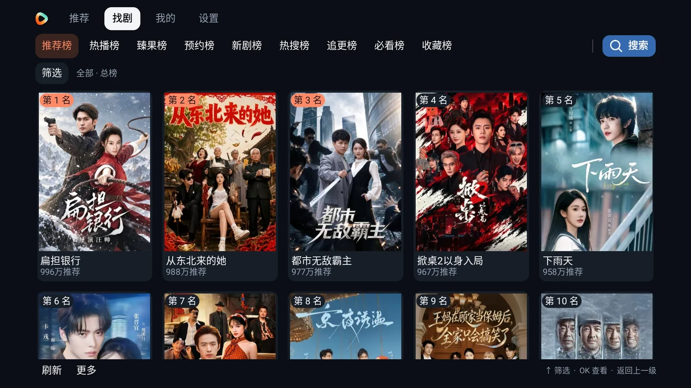

下一部好剧，
不必费心找。
推荐流、热门排行榜、真人剧与漫剧筛选，还有支持演员、角色等资料展示的搜索。

推荐流、热门排行榜、真人剧与漫剧筛选，还有支持演员、角色等资料展示的搜索。
分组选集、系列剧、自动连播与断点续播。清晰度、最高 3 倍速和画面模式随手调整。
游客也能收藏、点赞与保存进度。登录本人红果账号并联网后，自动同步追剧记录。
大屏，也要顺手
方向键、OK、返回。
常用操作，一支遥控器就够。
多个热门榜单，搭配真人剧 / 漫剧分类筛选，浏览与搜索各得其所。
截图来自 0.9.74 / 0.9.75 测试版本，展示典型操作；实际界面以当前版本为准。查看完整截图集 ↗
彩色弹幕支持四档字号、全屏 / 半屏、速度与透明度。简体中文、繁體中文、English 三语界面随时切换。
收藏、点赞和观看记录先保存在本机，联网后补传。稍后看留在本机，给下一次的闲暇留个位置。
按设备提示允许安装应用。覆盖安装可保留数据，首次使用可直接以游客身份观看。
需要 Android 8.0（API 26）及以上，并允许安装本地 APK。不同品牌和型号的系统、安装权限与解码能力可能不同。三星 Tizen、LG webOS、VIDAA、Roku 等非 Android 系统不能直接安装，可搭配兼容的 Android 盒子使用。查看兼容说明 ↗
App 免费下载，不设置付费解锁和会员购买流程。游客可以直接观看、收藏和点赞；登录本人红果账号并联网后，可同步收藏、点赞与观看记录。
先核对 Android 版本、剩余存储空间与安装权限。播放效果还取决于设备、网络和内容源，可尝试调整清晰度或重试。反馈时附上设备型号、App 版本、具体操作和错误截图，方便定位。提交问题 ↗
保持联系
在 Telegram 获取版本消息、分享使用体验。
遇到问题，也欢迎带着设备信息来反馈。